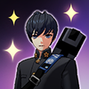
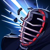
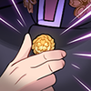
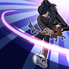
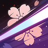
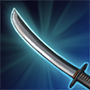

Discripton
Yuki is one of the sword wilding dullest on the island looking for trouble. He uses his skills to close the gap between his opponents and cut them down. Although his skills seem flashy he also has a few tricks up his sleeve if someone gets the jump on him.
Skills

Perfect Fit (passive)
"Yuki stores cufflinks as a resource. Upon damaging an enemy, he consumes a stored cufflink, dealing additional true damage. Yuki recovers 1 cufflink every 4 seconds while out of combat. Activating Button Up will refill all of his cufflinks."
Perfect Fit allows Yuki to dish out extra damage to enemy’s when he has cufflinks available. His Q skill also has a bonus effect if used with a cufflink. It’s very important to use your w when out of cufflinks as this will also replenish them while making you take less damage.

From Head to Toe(Q)
"Yuki's next normal attack deals damage and reduces the movement speed of enemies by 50% for 1 second.
Consuming a cufflink stuns enemies for 0.5 seconds."
From head to Toe is a great engage skill as it slows the enemy on hit by 50% or stuns them if you have a cufflink up. Make sure to start a fight with this skill when you have cufflinks to get free attacks off when you stun them.

Button Up (W)
"Passive: reduces cooldown of Button Up by 0.5 seconds each time Yuki takes damage.
Yuki straightens up his outfit and reduces the cooldown for Dashing Gentleman by 4/5/6/7/8. While using Button Up, his defense is increased by 50%. When Button Up is complete, he refills his cufflinks."
Button Up is one of Yukis play maker skills. Being able to reduce incoming damage as well as reduce the cooldown of your dash ability makes this skill very important. You can use this as part of your combo to get your e and cufflinks back and output more damage or you can use it in a losing fight to get a second dash away to try to lose your opponents.

Dashing Gentleman (E)
"Yuki dashes in the targeted direction, dealing damage to the first enemy hit. Enemies hit are disarmed, disabling their normal attacks."
Dashing Gentleman is the keystone of Yukis playstyle. as said in the skill description this is a dash that does damage and prevents normal attacks. this can be used to engage or disengage as well as reposition in a fight to dodge attacks. What makes this skill so powerful is not even the skill itself it’s the fact that you can reduce its cooldown with W. later in the game when you have lower cooldowns you can almost cast two dashes back to back instantly for crazy chasing potential.

Coup de Grace (R)
"Yuki unsheaths his sword and slashes an area in front of him, dealing damage to enemies and leaving a mark, reducing movement speed of enemies by 70% for 1 second. The mark explodes after Yuki sheathes his sword, dealing true damage based on the enemy's max HP."
Yukis R is a very powerful strike if it connects with the enemy, it can be dodged because of the cast time of the 2nd part. In order to increase your odds of landing your R you should use your Q with a cufflink as it will stun them for .5 seconds then click R. This small stun could be the difference between them dashing/walking(depending on enemy) out of the 2nd cast and missing most of your damage or getting hit by it.

Parry (D)
"Block all damage for a certain time, and return the damage to the attacking enemy."
Yuki uses a two-handed sword as his weapon and once he hits mastery 7 on it, he unlocks the skill parry. this is a huge part of his kit as it allows him to make so many outplays. With this single skill you are able to block damage from anyone in the game. This alone can help you win fights against players that are better geared or higher level then you.
Iteam Build
- Hovud (Two-handed sword)
- Optical Camouflage Suit (Chest)
- Crystal Tiara (Head)
- Creed of the Knight (Arm)
- Bucephalus (Leg)
- Flower of Fate (Accessory)
These items allow Yuki to get to 100% crit meaning all of his attacks will do increased damage. On top of that the arms allow for extra crit damage. so instead of his attacks dealing 200% damage they do 220%
Pathing Route
- Alley
- Pond
- Avenue
- Hotel
- Dock
Pathing is pretty straight forward as you go from zone to zone collecting the items you need for your build.as you get more comfortable with your character you can look at other zones that have the items you need to see where else you can go if you are finding yourself unlucky in finding items. On top of that a big tip around pathing is if you see that one zone you need to go into has a lot of people dropping there you should start there and get as much stuff as you can as you walk to your other zones because items only spawn in a limited number of times a game so you don’t want people to get them all before you.
Summuary
Skill order R>E>W>Q>P
Above is the order you should level up your skills R whenever you can and then e w q and the passive in that order. With this build you will become strong in the mid to late game once you start getting all your items and have a lot of points into your e and w. This allows you to dash around fast with resets and pumping out a lot of damage. It will take some time to figure out game to game situations on how to complete your items and where to farm but with practice you should be able to give anyone on the island a run for their money with this build.